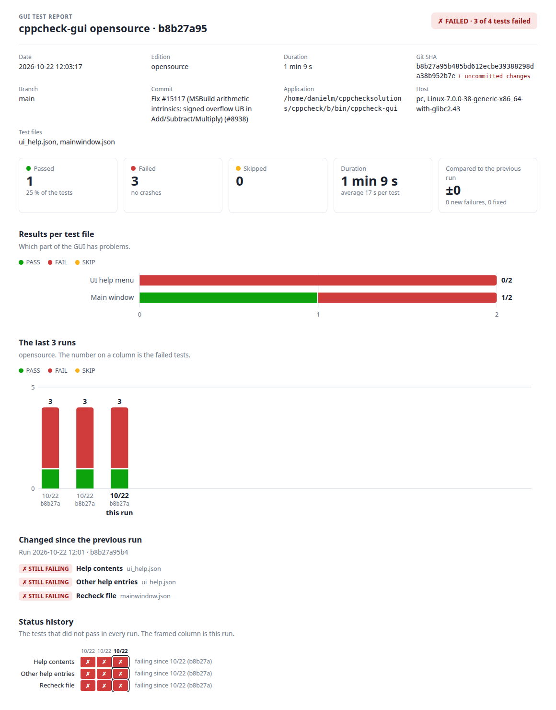

gui-test Handbook
The manual tests for cppcheck-gui are written in Gherkin, the plain-language Given/When/Then format. gui-test turns them into automated tests: Claude explores the GUI once and writes a script, and from then on the script is replayed without any AI.
Updated 2026-10-24
Overview
Working with gui-test has three steps:
- Write the test in plain words: what the starting point is, what you do and what you expect to see.
- Generate the script, once. Claude does the test in the application and writes down what it did as a script.
- Run the tests as often as you like. The scripts are replayed without AI, and you get a report with the results and screenshots.
All of this is done in the web interface. The application runs on its own virtual screen, so your desktop is not touched while tests run.
The tests are kept in tests/, and every run puts its report, logs and screenshots in a new directory under results/.
Getting started
Start web.py with the cppcheck-gui binaries you want to test, then open http://127.0.0.1:8080/ in a browser.
./web.py --opensource ~/cppcheck/build/bin/cppcheck-gui \
--premium ~/premium/build/bin/cppcheck-gui --src ~/cppcheck--opensourceand--premiumeach take the binary of that edition. Give one, both or none; without a binary you can edit tests but not generate or run them.--srcis the git checkout the binaries are built from. It is only used for the git SHA, branch and commit in the report; the default is the directory of the binary.--dir(defaulttests),--out(defaultresults) and--port(default 8080) change where test files and results live and which port is used. The server only listens on 127.0.0.1.
Some packages must be installed first. On Ubuntu (checked on 26.04):
sudo apt install xvfb xdotool dbus at-spi2-core python3-gi gir1.2-atspi-2.0 python3-pil tesseract-ocr tesseract-ocr-engThe tesseract packages are only needed for ocr checks. To generate scripts the claude command line tool must be installed too.
The web interface
- Header: Save, Run all (every test in every file), the Edition picker, a status message and a link to this handbook. The Edition picker only shows the editions that
web.pygot a binary for, and "both" when it got two. Without a binary there is no picker, and tests can be edited but not generated or run. - Left column: three boxes.
- Test files, with New file. A file is flagged
invalidwhen a test in it has errors, andregenerate Nwhen N tests have an outdated script. - Test projects, with New test project.
- Results: Reports lists the earlier runs with their date, edition, version, test files and result. Click a date to open the report.
- Test files, with New file. A file is flagged
- Main area: the open test file with its tests, the open test, or the open test project. Each has an ✕ in the top right corner to close it.
- Job box: while a script is generated or tests run, it shows the progress, the results as they come in and a link to the report. Stop ends the job. Its ✕ hides the box until the next job.
Gherkin
The manual tests are written in Gherkin, the language that Cucumber, behave and other behaviour-driven development tools use. Gherkin describes behaviour in plain words with a small set of keywords, so a test reads the same for a developer, a tester and Claude. Each test file in tests/ is a .feature file with one feature, and every scenario in it is one test.
Feature: Preferences
Background:
Given the application is started with no project loaded
@id:t28ce8afe @project:embedded @edition:opensource
Scenario Outline: Misra rule text file
Given Edit > Preferences is open on the Addons tab
When I select the rule text file {project:embedded}/<rulefile>
And I close the dialog with OK
And I open the project file {project:embedded}/embedded.cppcheck
And I wait until the analysis is done
Then the Misra error for the unused parameter has the rule text from the file
And there are no internalError results
Examples:
| rulefile |
| rules.txt |
| rules with spaces.txt |Keywords
| Keyword | Meaning here |
|---|---|
Feature: | The first line of the file. Its text is the title of the test file, shown in the editor and the report. Lines below it, before the first scenario, are a free description |
Background: | Steps that come before every scenario of the file, typically Given the application is started with no project loaded. At most one, before the scenarios |
Scenario: | One test. The text after the colon is the name of the test, unique within the file. Example: means the same |
Scenario Outline: | A test that is run once for every row of its Examples table. Scenario Template: means the same |
Examples: | The table of a scenario outline. The first row is the header with the column names; <column> in a step is replaced by the value of the row. See Examples (test matrix) |
Given | The starting point: the state that the application is in before the test does anything |
When | An action of the user: a click, a menu entry, typing, opening a file |
Then | The expected result: something that can be seen in the GUI or in a file. Every scenario needs at least one Then |
And, But, * | Continue the step above with the same meaning, e.g. a second Then. A scenario can not start with And or But |
""" | A doc string: lines of text that belong to the step above, e.g. code to type into the scratch pad. It ends with another """ |
| a | b | | A data table that belongs to the step above |
@tag | Tags on the line above a scenario, see below |
# text | A comment. Comments are lost when the web interface saves the file |
TODO: | Not standard Gherkin: a description line under the scenario name that says why the test can't be automated yet |
A scenario can switch between When and Then more than once, when a result has to be checked in the middle of the test:
Scenario: Filter the results
Given the project file {project:basic-project}/basic.cppcheck is opened from the File menu
And the analysis is done
When I type "arrayIndex" in the Filter field
Then only the arrayIndexOutOfBounds error in b.c is shown
When I clear the Filter field
Then all errors are shown againTags
Everything about a test that is not a step is a tag on the line above the scenario. Tags can't contain spaces.
| Tag | Meaning |
|---|---|
@id:t1a2b3c4d | Identifies the test, also when it is renamed. The script is stored by this id. Added automatically when it is missing; don't change it |
@ticket:14893 | The ticket of the test, shown as #14893 |
@project:NAME | A test project that the test uses, one tag per project |
@edition:opensource | An edition that the test is for, one tag per edition. Without the tag the test is for all editions |
@disabled | The test is not run |
Other tags are kept but have no meaning for gui-test.
Writing good steps
Claude reads the steps as they are when it makes the script, and the Then steps become the checks. A good scenario is one that a new tester could follow without asking:
- Use the words of the GUI: the menu entries, button texts and dialog titles as they are shown, e.g.
When I open File > Edit Project File. - Write
Givensteps as a state (Given the analysis is done),Whensteps as an action (When I click Recheck) andThensteps as something that can be seen (Then the nullPointer error in a.c is gone). - One thing per
Thenstep.Then there are no results for a.candAnd there are no results for b.cbecome two checks, and a failure points at the right one. - Be concrete about results: name the file, the error id and the line instead of "the results are correct".
- Say how to wait:
And I wait until the analysis is done. - Refer to files with
{project:NAME}/path, and to the scratch directory with{work}. - Keep the steps that all tests of a file share in the
Background.
Changing the steps, the Background or the Examples makes the script of the test outdated, because the script was made for the old words.
Differences from Cucumber
- There are no step definitions. In Cucumber every step is matched by a pattern to code that someone writes. Here Claude reads the scenario once and writes a script for it, and the script is replayed. Steps can therefore be free text; they don't have to repeat fixed phrases.
- The script of a scenario is stored next to the feature file in
FILE.scripts.json, by test id. Rule:, tags onExamples, and more than oneFeatureper file are not supported.- Placeholders in braces are gui-test variables, not Gherkin:
{project:NAME},{work}and{edition}. TODO:description lines are a gui-test convention.
Writing tests
A test is a Gherkin scenario, written as if for a person: Given steps say where the test starts, When steps what is done and Then steps the result to expect. Claude reads exactly these words when it makes the script, so be concrete.
Feature: Results list
Background:
Given the application is started with no project loaded
@id:t389a5f3a @project:basic-project
Scenario: Clear results
Given the project file {project:basic-project}/basic.cppcheck is opened from the File menu
And the analysis is done
When I click Clear results
Then the results are cleared: the result tree is emptyThe files can be edited in the web interface or in a text editor. The Gherkin chapter describes the format; the web interface shows the tags of a scenario (ticket, editions, test projects, enabled) as separate fields.
Tests live in test files (tests/*.feature), one file per area of the GUI. Click a file in the left column to open it, or New file to create one. An open file shows:
- Title: the
Feature:line, shown in the report. - Background: the steps that are done before every test of the file, e.g.
Given the application is started with no project loaded. - Tests: the list of tests. Click one to edit it, + New test to add one. A test is flagged
invalidwhen it has errors andregeneratewhen its script is outdated. - Run tests: runs all tests in the file.
Nothing is written to disk until you press Save; a dot after the file name means there are unsaved changes. Errors, such as a test without a Then step, are shown under the field and must be fixed before you can save.
The test editor has these fields. The ↑ and ↓ buttons move the test in the list, and Delete removes it.
| Field | What to write |
|---|---|
| Name | Unique within the file. Shown in reports and the history, so a rename starts a new history line |
| Ticket | Optional, e.g. a Trac ticket number |
| enabled | Untick to leave the test out of every run without deleting it |
| Editions | Tick the editions the test runs in; by default all. The script is the same for all editions, {edition} is replaced by the edition's name |
| Scenario steps | One Gherkin step per line, e.g. "When I open File > New Project File". Every Then step becomes at least one check in the script. Use <column> for the values of the Examples |
| TODO | Why a test can't be automated yet, e.g. "cannot be automated". Leave empty otherwise. In the file it is a line TODO: ... below the scenario name |
| Test projects | Tick the projects whose files the test uses, see below |
| Script | The script of the test, with the buttons Generate script, Run test and, when it is outdated, Approve the script. See Scripts |
| Examples | A Gherkin table; every row is a separate run and the test becomes a Scenario Outline |
Examples (test matrix)
A Scenario Outline is run once for every row of its Examples table:
When I select the platform <platform>
...
Examples:
| platform | lang |
| native | C |
| unix32 | C++ |That is 2 runs. A step like "When I select the platform <platform>" gets the value of each run, in the script it is {platform}. The runs are named after the test plus the values, e.g. Relative paths [platform=unix32, lang=C++], and each one gets its own line in the report. The editor shows how many runs the Examples give.
Test projects
A test project is a directory of files that tests use: source files, a .cppcheck project file, a .cfg file. They live in tests/projects/NAME and are edited under Test projects in the left column. Before every run the project is copied to a new empty directory, so a test always starts with the same files, even if an earlier test changed them. In a script the copy is {project:NAME}, or {project} when the test has only one project.
Changing a file in a project makes the scripts of the tests that use it outdated, because the script was made for the old files.
Scripts
A test runs only when it has an up-to-date script. Generate it with Claude once, check it, and from then on it is replayed without AI.
Generating a script
Open the test and press Generate script. gen.py starts the application with the test projects in place, and Claude does the test by hand: it looks at the accessibility tree, clicks and types, and checks the expected result (the Then steps). It then answers with a script. The script is replayed from scratch and saved in FILE.scripts.json only if that replay passes. When the replay fails, Claude is told why and tries again, 3 attempts in all. While a script is generated the editor is locked.
- A Scenario Outline is explored with the first row of its Examples. The script uses
{column}where the values belong. - When the application does not do what the expected result says, Claude still writes the script that checks it and marks that one check
"observed_fail": true. The script is saved, and the test fails until the bug is fixed. That is a finding, not a broken script. - When the test can't be done through the GUI, Claude answers
CANNOT: <reason>and no script is saved.
Read the generated script before you trust it, especially its expect steps: they decide what the test proves.
The script format
A script is a JSON list of steps. Each step has do (an action) or expect (a check), and a label in the words of the test that is shown when it fails. Elements are found by name (part of the accessible name, case-insensitive) and role, and if needed path, nth and exact.
[
{"do": "click", "name": "Help", "role": "menu item", "label": "Open the Help menu"},
{"do": "click", "name": "Contents", "role": "menu item", "label": "Choose Help > Contents"},
{"expect": "visible", "name": "Cppcheck GUI help", "role": "dialog", "label": "A help window opens"}
]| Step | What it does |
|---|---|
do: click, rightclick, doubleclick, focus, hover | Act on an element; "mouse": true clicks with the mouse |
do: settext | Replace the text of an edit field with value |
do: type, key | Keyboard input to the focused element; keys uses xdotool names like ctrl+o, Return |
do: wait | Wait for an element to appear, or with "gone": true to disappear |
do: restart | Quit and start the application again; settings are kept |
do: sleep, write, copy | Pause, write a file in {work}, or copy a file in a test project |
expect: visible, gone | An element is shown, or is not |
expect: state | An element is or is not checked, enabled, focused, selected, expanded... |
expect: value | The value or text of a field equals something |
expect: text, ocr | Text is (not) on the screen; ocr reads pixels with tesseract, for context menus AT-SPI can't see |
expect: file | A file contains, does not contain or matches a regex |
expect: alive, exited | The application is still running, or has quit by itself with status 0 |
expect: capture | Search regex in an element and save group 1 as a name; {name} in the later steps is replaced by it, for text that changes such as the version |
Checks and actions wait for their element up to timeout seconds, 5 by default. The placeholders {work}, {home}, {project:NAME}, {column} (of the Examples) and {edition} are replaced before the run, captured values when the capture step has passed. The full description is under How to write a script below the script in the editor.
Outdated scripts
A script is made for the test's steps, the Background of the file, TODO, Examples and the files of its test projects. When any of those change, the script is OUTDATED: it is kept but skipped by every run, and the editor says so in red. You then have three choices:
- Generate script again.
- Approve the script when the change does not affect it, e.g. a typo fix in a step.
- Edit the script by hand in the editor; it has to be valid JSON before you can save.
Running tests
Every test starts a fresh application with an empty HOME and fresh copies of its test projects, so tests never depend on each other.
From the web interface
Pick the edition in the header first: opensource, premium or both. Then:
- Run test in an open test runs that test, all the rows of its Examples.
- Run tests in an open test file runs every test in that file.
- Run all runs every test in every file.
With "both", the run is done for one edition and then the other, and each edition gets its own report. The job box shows the test and step that is running and the results as they come. Stop ends the run at once: the test that was running is SKIP "aborted by user", and the report is written with the tests that are done. Only one job runs at a time.
From the command line
./run.py ~/cppcheck/build/bin/cppcheck-gui tests/application.feature tests/projects.feature --edition opensource| Option | Meaning |
|---|---|
APP | The binary to test |
FILE ... | One or more test files |
--edition opensource|premium | APP is this edition; only the tests for it run. Without it all tests run and there is no history per edition |
--test TEXT | Only tests whose name contains TEXT (case-insensitive) |
--id ID | Only the test with this id, all the rows of its Examples |
--src DIR | Git checkout for the SHA in the report; default the directory of APP |
--out DIR | Where the run directories go; default results |
run.py prints one line per test and the path of the report, and exits with 1 when a test failed, so it can be used in a script or CI job. Scripts are generated the same way with ./gen.py APP FILE.feature; it takes --edition, --test, --id, --force (also tests that have a script), --model and --attempts.
What happens in a run
- The tests to run are selected: enabled, for this edition, not filtered out. Tests without a script, or with an outdated one, are SKIP.
- For each test, the test projects are copied and the application is started on a new virtual screen with an empty HOME.
- The script is replayed step by step. After every step that acts on the GUI (click, type, key, settext, restart...) a screenshot is saved.
- At the end, or at the first failing step, the step log, a final screenshot and the application log are saved, and the log is searched for a crash.
- After the last test,
results.jsonandreport.htmlare written in the run directory.
Reading the report
Each run writes one self-contained report.html; read it top-down: the verdict first, then what changed, then the details of each failure.

| Part | What it tells you |
|---|---|
| Header | FAILED or PASSED with the count, and the run details: date, edition, duration, git SHA ("+ uncommitted changes" when the checkout was dirty), branch, commit, application, host, test files |
| Number boxes | Passed, failed (how many crashed the app), skipped, duration, and with history the change against the previous run |
| Results per test file | A bar per file, green/red/amber. Shows whether failures are in one part of the GUI. Only when the run has more than one file |
| The last runs | Pass, fail and skip counts for up to 15 runs of the same edition; the number on a column is its failures |
| Changed since the previous run | NEW failures, tests that are fixed, and tests that are STILL FAILING |
| Status history | A row per test that did not pass in every run: "new failure", "failing since 10/22 12:00 (b8b27a)", "fixed since", "flaky: 4 changes", "never ran" |
| Failed and skipped tests | A card per test: the reason, the step strip, the screenshots after the last 3 steps and the final screen with a red frame |
| All tests | Every test grouped by file, with its time, links to its files and its step screenshots |
The step strip
Every test has a strip with a cell per script step: green passed, red failed, grey not run. A failure at step 2 of 14 usually means the test or the application broke early. A failure at the last step usually means one check is wrong, or the bug the check describes. Under the strip it says e.g. "failed at step 9 of 14", "not run" or "did not start".
Files in a run directory
A run directory is results/<date>-<time>-<edition>-<sha>/, e.g. 20261022-120317-opensource-b8b27a95/. The files of a test are named after the test (NAME below), with spaces and other special characters replaced by _. They are also linked from the report.
| File | Content |
|---|---|
report.html | The report |
results.json | The run details and every result. The history is read from these files |
NAME.txt | The step log: each step, ok or FAIL, its time and its screenshot |
NAME.png | The screen at the end of the test, or when it failed |
NAME.stepNN.png | The screen after step NN, for steps that act on the GUI |
NAME.app.log | What the application printed |
The history compares runs of the same edition in the same results directory. Tests are matched by name.
Troubleshooting
Start with the reason in the report and the final screenshot: together they usually say whether the application, the script or the test is wrong.
| What you see | What it means and what to do |
|---|---|
| SKIP "no script" | The test has no script yet. Generate one, or write it by hand |
| SKIP "OUTDATED SCRIPT" | The test or one of its test projects changed after the script was made. Generate again, or approve the script if the change doesn't matter to it |
| FAIL "timeout waiting for element to appear" | An element with that name and role wasn't found within the timeout. The reason lists the most similar visible elements and the open windows: a renamed button shows up there. Fix the name in the script, or regenerate |
FAIL with observed_fail=True in the reason | Claude saw the application not do what the expected result says when it made the script. It is a known bug, and the test fails until the bug is fixed |
| FAIL with CRASH | The application was not running at the end of the test, or its log has a fatal message (SIGSEGV, SIGABRT, an assertion, AddressSanitizer, QFATAL...). A crash fails the test even if every step passed. Read NAME.app.log. A test that quits the application with status 0 is not a crash |
| FAIL "could not start" | The session or the application did not start. Check that the packages under Getting started are installed, and that the binary runs |
| "flaky" in the status history | The test changes between PASS and FAIL. Usually timing: give the slow step a longer timeout, or add a wait step before it |
| A context menu can't be found | Some menus are not in the accessibility tree. Check them with an ocr step and choose with key Down and Return |
| "path ... is outside the test directories" | write, copy and file steps may only use {work}, {home} and the test project copies |
| Generate script or Run test is greyed out | web.py has no binary for the edition picked in the header, or the test is not for that edition. Run test also needs an up-to-date script |
Reference
The commands, with all their options. web.py, run.py, gen.py and guitest.py also print their help with --help.
web.py [--opensource APP] [--premium APP] [--src DIR] [--dir tests] [--out results] [--port 8080]
run.py APP FILE.feature... [--edition opensource|premium] [--test TEXT] [--id ID] [--src DIR] [--out results]
gen.py APP FILE.feature [--edition opensource|premium] [--test TEXT] [--id ID] [--force] [--model M] [--attempts 3]
testfile.py convert IN.md|IN.json OUT.featureguitest.py
guitest.py is what Claude uses to drive the GUI, and you can use it by hand to look at the GUI the way a script sees it. The session lives in $GUITEST_STATE (default /tmp/guitest-<uid>/state.json).
guitest.py start ~/cppcheck/build/bin/cppcheck-gui
guitest.py tree --showing --depth 3
guitest.py click --name Help --role "menu item"
guitest.py screenshot /tmp/screen.png
guitest.py stop| Command | What it does |
|---|---|
start APP [ARGS] | Start Xvfb, D-Bus, AT-SPI and the application. --home DIR (default an empty directory), --size 1280x900 |
stop, restart | Stop everything; quit and start the application again with its settings kept |
alive, log | Exit 0 if the application runs; print what it wrote to stdout and stderr |
windows, texts | The top level windows and dialogs; every visible text |
tree | The accessibility tree. --showing only visible elements, --depth N, --path P one subtree |
click, rightclick, doubleclick, focus, hover | Act on an element found with --name, --role, --path, --nth, --exact. --mouse for a real mouse click |
settext VALUE, type VALUE, key KEYS | Set a field's text; type into the focused element; press keys (xdotool names) |
wait | Wait for an element, --timeout 10, --gone to wait until it disappears |
info, suggest | Role, name, text, value and states of one element; the visible elements most like --name/--role |
ocr, screenshot FILE | Text on the screen read by tesseract; a PNG of the screen |